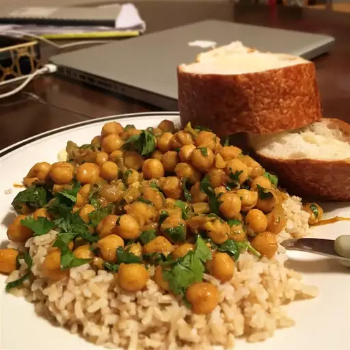

Chickpea Curry

Description
From "The Plant Based School":
Chickpea curry is an easy one-pot recipe with an exquisitely rich flavor and mouthwatering creamy texture.
Tender chickpeas simmer in a velvety gravy of Indian spices, tomatoes, and coconut milk, producing a deeply satisfying, nutritious, and comforting meal.
Chickpea curry is ready in just 30 minutes. Serve it with fluffy basmati rice or warm naan bread for the perfect family dinner.
- FLAVOR BASE: olive oil, onion, garlic, and ginger.
- SPICES: curry powder, ground cumin, ground coriander, turmeric, red pepper flakes, and optionally, garam masala
- OTHER INGREDIENTS: canned or cooked dried chickpeas (garbanzo beans), crushed or diced tomatoes, coconut milk, vegetable broth, and spinach
- SERVES WITH: basmati rice or brown rice, naan or roti, fresh cilantro, Greek-style yogurt, lemon or lime juice, and Tadka